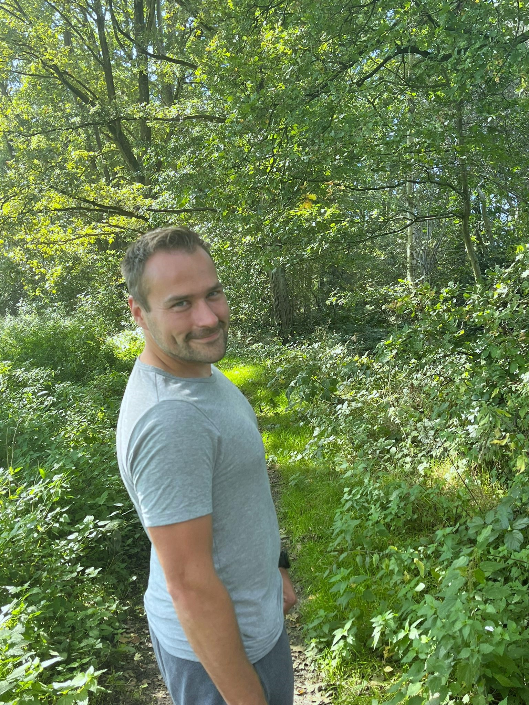

Intro
Beste familie, vriend(in), Ooms Bart, recruiter,
medestudent of wildvreemde. Ik ben Kristiaan Dul en welkom op de 1
ste versie van mijn eigen gemaakte website met HTML besprenkeld met
wat CSS opmaak. Dit als een project voor de opleiding Graduaat Programmeren die ik in september 2023 gestart ben op de Thomas More hogeschool te Geel.
Een nieuw spannend hoofdstuk in mijn leven waarvoor ik eerst een dikke comfortable knoop moest doorhakken, sommige noemden het ook wel eens "losbreken uit een gouden kooi."
Wie ben ik?
Ik ben van 33 jarige leeftijd, geboren in Turnhout en groeide samen op met 1 broer en 2 zussen. Ik heb in mijn leven op verscheidene plaatsen in de kempen gewoond zoals
Hoogstraten, Sint-Lenaarts, Dessel en Lille maar eindigde uiteindelijk in Malle waar ik toch zeker wel mijn plaats gevonden heb samen met mijn vriendin Caroline en 2 poezen Appa en Finn.
Als kleine bengel wist ik vroeger zoals velen onder ons nooit wat ik wou worden of laat staan wist welke mogelijkheden er zelfs allemaal waren. Wel had ik op 8 jarige leeftijd
een Nintendo 64 waar ik verzot op was en zat ik een paar jaar later ook dag en nacht op de gezamelijke huiscomputer, niet alleen om te gamen maar ook om alle mogelijkheden van
de computerwereld en het internet te ontdekken en natuurlijk ook alle hiermee gepaarde ict problemen op te lossen. Terugblikkend hiernaar was het vrij duidelijk dat ik een soort Informatica
riching had moeten volgen in het middelbaar maar uit onwetendheid ben ik in de richting
Hotel beland, dit omdat ik thuis graag meehielp met brood of pattiserie te bakken.
Hier vond ik mijn draai niet echt en ben ik overgeschakeld naar een algemenere richting:
Sociaal Technisch Wetenschappen, meer specifieke details hierover kan u terugvinden op mijn
Curriculum Vitae pagina. Na hier af te studeren was ik nog steeds in het ongewisse over de toekomst en besloot ik maar een
kijkje te gaan nemen in een nieuwe opleiding
Integrale Veiligheid.
Mijn Carrière
Deze richting vond ik uiteindelijk interessant genoeg om uit te doen en nog voor ik mijn diploma binnenhaalde werd ik al opgebeld door
G4s en had ik een vakantiejob beet als bewakingsagent.
Tijdens het uitvoeren van deze job werd ik ook gecontacteerd door Securitas en rolde ik van mijn vakantiejob mijn vaste job in. Hier stond ik de eerste jaren op heel veel verschillende bedrijven
waardoor de job steeds gevariëerd en interessant bleef, als er dan toch eens een rustigere of saaiere job voorbij kwam kon ik mij nadien toch nog uitleven met dingen zoals competitief
gamen of squashen waar ik dieper op in ga op mijn
hobby pagina. Na 4 jaar werd het tijd voor een vaste post en dit op het bedrijf
Fluxys, hier zat ik een tijdje goed door een goede balans tussen werk en vrije tijd omwille van 12-uur shiften welke zich vertaalde naar 15 dagen thuis per maand. Dit zorgde voor veel vrije tijd
die ik gebruikte om vanalles bij te leren over de wereld, hierover ga ik dieper in op mijn
pagina met ervaringen.
Na 2 jaar werd het wel tijd voor een iets grotere uitdaging op het werkgebied en die vond ik op het
SCK-CEN. Een zeer grote post waar veel kennis vereist was met een serieuze opleiding van
een half jaar en waar je ook enorm veel verantwoordelijkheid had. Ik kon hier lang genoeg mijn honger naar kennis bedwingen maar na 3 jaar viel ik uiteindeklijk toch in een "afgrond van stilstaan" en dit met lege maag.
Van 2020 heb ik het nog kunnen uitrekken tot 2023 door kennis te vergaren over de Crypto- en Spirituele wereld welke je ook kan terug vinden bij mijn
ervaringen.
Daarna werd het eens zo duidelijk dat ik dit hoofdstuk moest afsluiten, een sprong in het ongewisse nemen en een nieuwe starten met een heel ander thema.
Dit was een beetje het levenspad dat ik bewandelde, als je hier vragen of opmerkingen over hebt of gewoon contact wilt opnemen aarzal dan niet en ga naar mijn
contactpagina.